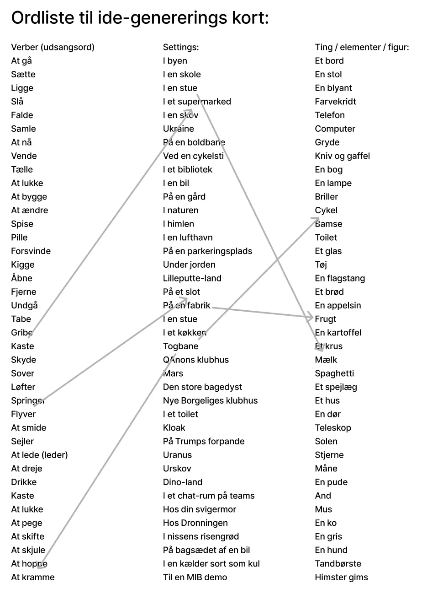
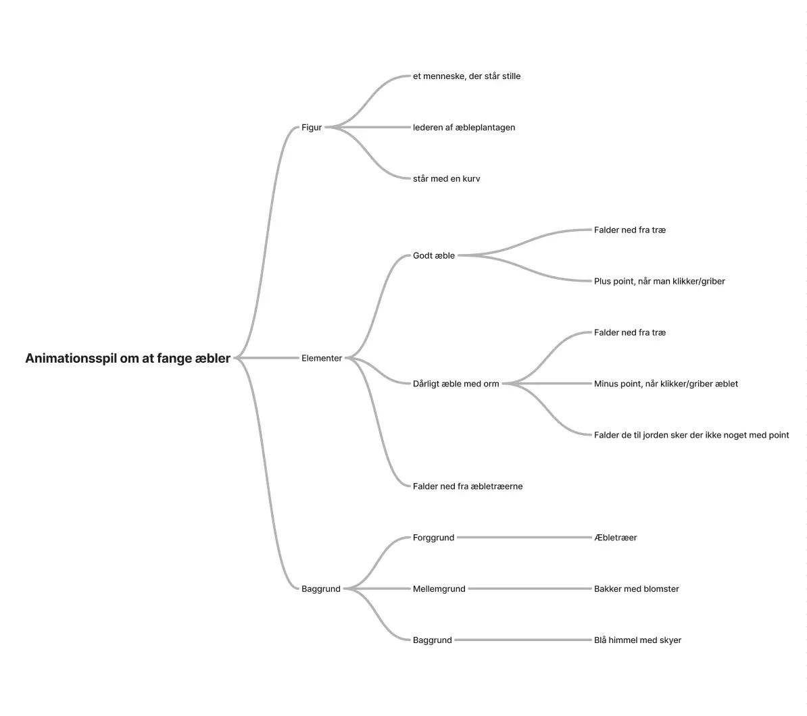
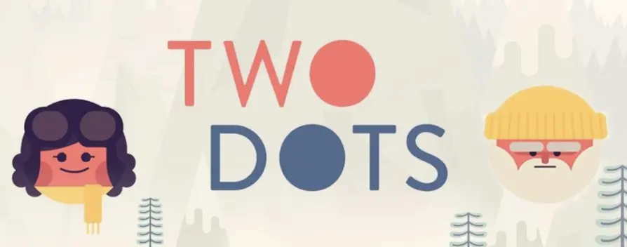
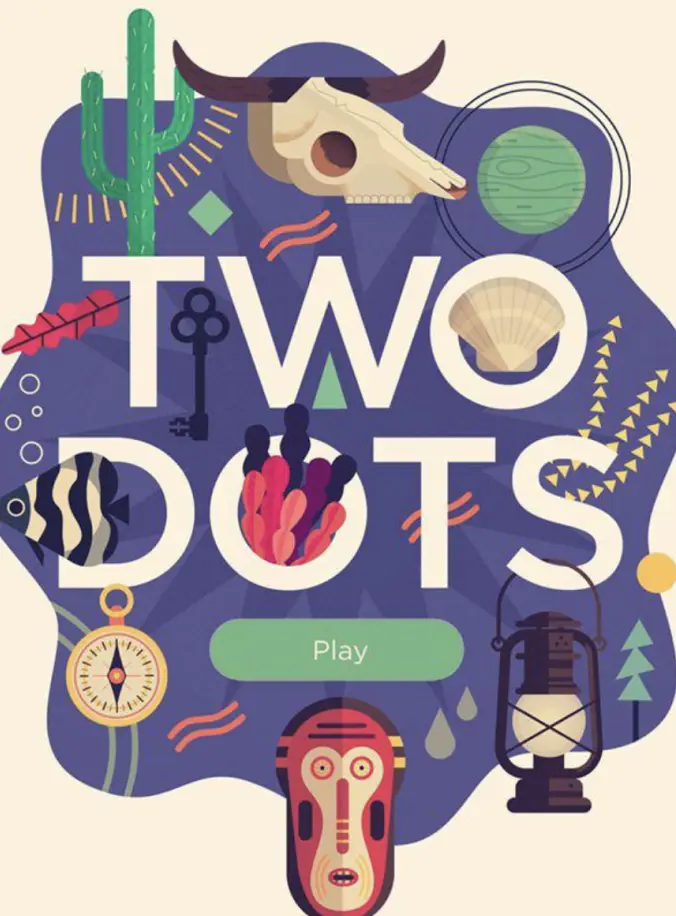
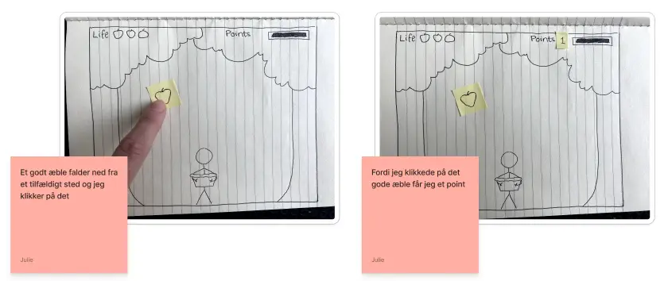
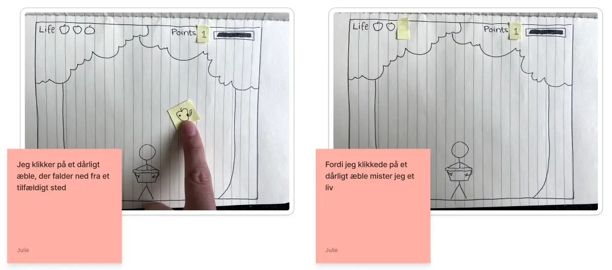
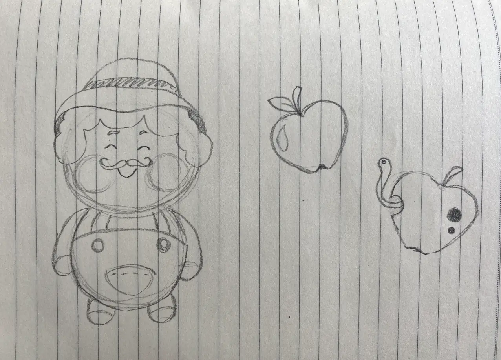
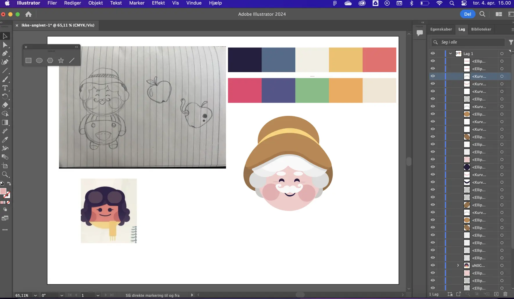

TEMA 3
Animationsspil
Opgave
Vores opgave i dette tema var at producere et animationsspil fra bunden ved at tegne elementer i Adobe Illustrator og gøre det interaktivt i VS Code ved hjælp af Javascript.
Arbejdsproces
Inden jeg gik igang med at tegne i Illustrator, skulle jeg ved hjælp af ideudvikling, som vi lærte fra tema 3, finde ud af hvilket slags spil jeg ville producere. Jeg besluttede, at jeg ville lave et simpelt spil, hvor det handlede om at gribe æbler. Jeg designede alle mine elementer i Illustrator, eksporterede dem som svg’er og implementerede dem i VS Code. Efter jeg havde sat mine svg’er op ved hjælp af HTML og CSS, gjorde jeg mit spil interaktivt med at tilføje Javascript. Jeg fik tilføjet baggrundsmusik, som loopede, baggrundslyde, bevægelser i mine elementer og jeg gjorde også point, tid og liv interaktivt.
       Hvad lærte jeg?
Jeg lærte Javascript en smule at kende. Jeg synes, at det var svært, men jeg fik en forståelse for, at interaktivitet også kan have stor betydning for en brugers oplevelse af et website. Jeg lærte, at der næsten ingen grænser er, for hvad man kan designe i Adobe Illustrator. I dette tema huskede jeg også mig selv på, ikke at sætte barren for højt i forhold til ambitionsniveau, men at have respekt for, at det at lære nye ting såsom Javascript kan tage tid og energi.
Animationspilx